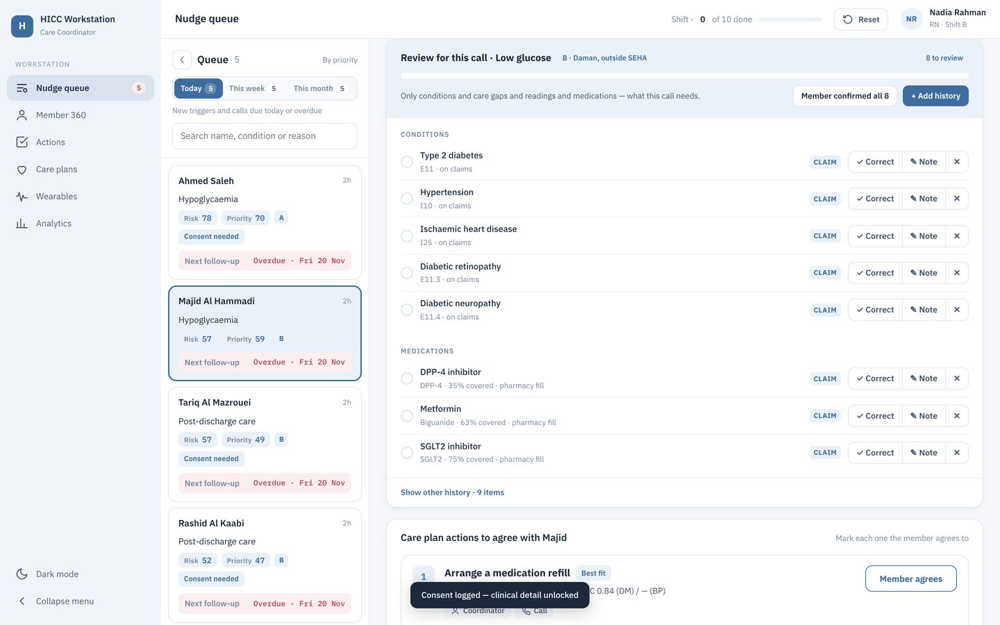
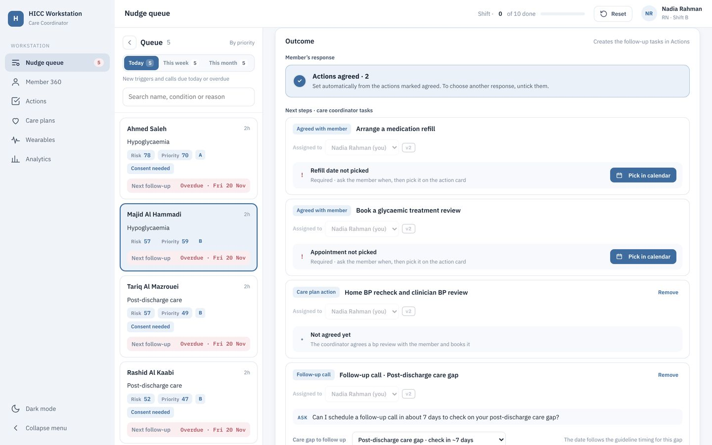

Workbook 1 · the rule database
Eleven sheets. Read them as four layers: the source catalogue, the rules, the bindings that glue rules to source columns, and the database design that stores config, results and outputs.
Every column of the 250-member longitudinal file, its SQL alias, group, type and which rule reads it. The 30 guardrail columns are the Exclusion_* and consent flags for gates G0 to G10.
The rulebook as rows. Five score components with caps 5, 6, 5, 5, 2 (max 23). Fourteen triggers with class, fire condition, next-best action, owner and done-when. Four alert colours. Four tiers plus the safety pathway.
One row per rule × source column: Trig3 reads longitudinal_member.flag_dm_hypoglycaemia_l12m, and so on. This is the sheet that makes the rules data-driven: change a binding row, not code.
What to create (tables), the order the engine runs in (lineage), and what the portal reads (views). START HERE records the rulebook decisions kept as written, such as the HbA1c goal of about 8%.
The 21 tables in the Database schema sheet, by job
1 table
longitudinal_member· 1 row per member, all 377 columns kept
10 tables
rule_set(version DEMO-2026-11-20)rule_definition,rule_input_bindingrisk_component,risk_point_rule,risk_tier_ruletrigger_rule,nba_rule,alert_rule,guardrail_rule
6 tables
intelligence_run(one row per run)member_risk_resultC M K U A, total, tier, safety flagmember_rule_evaluationfired / cannot_tell / not_fired + evidencemember_alert,member_need,worklist_item
4 tables
consent_event(gate G2)disposition_eventdone / declined / not reached / carriedmember_assertionwhat the member told the nursecare_gap_eventPotential → Verified → Scheduled → Reported → Closed
Workbook 2 · the portal mapping and full data model
Eight sheets. It starts from the screen, not the rulebook: 212 UI elements and controls, each tied to a proposed table and column, with a 35-table normalised model behind them.
Every label, number, button and JavaScript state key on the portal, with direction Read / Write / Action. Rulebook Trace ties the Intelligence elements back to rule inputs.
17 domains: identity, clinical, utilisation, wearables, intelligence, rulebook, care gaps, care plans, outreach, consent, operations, analytics, governance. Every FK points back to member.member_id or a parent row.
The same 377 columns as workbook 1, now classified to a destination table and column in the 35-table model (AGE → member.date_of_birth, for example).
Where the portal fixture and the longitudinal data disagree (two different risk scores, synthetic member array, client-side consent) and what was assumed.
Where the 212 UI elements land
| Portal screen | Elements | Main target tables (workbook 2 names) | Direction |
|---|---|---|---|
| Queue | 13 | member, campaign_member, clinical_trigger, risk_assessment | Read |
| Member 360 | 37 | member, member_utilization_snapshot, wearable_reading, lab_observation, medication, call_interaction | Read |
| Call workflow | 15 | call_interaction, clinical_trigger, consent_record, member_utilization_snapshot | Read + Write (consent) |
| Care gaps | 9 | care_gap, care_gap_decision, care_gap_evidence | Read + Write (decision, schedule) |
| Tasks | 14 | task | Read + Write (complete, book) |
| Intelligence | 9 | risk_assessment, risk_driver, safety_alert, clinical_trigger | Read |
| Care plans · Shift analytics | 7 | care_plan, task, shift_metric, coordinator | Read |
| JavaScript payload and state | 61 | the CCC_MEMBERS seed array and per-member state keys, mapped to the same tables | Read / Write |
| Interaction handlers | 47 | 23 are navigation only; 24 mutate task, care_gap_decision, call_interaction, consent_record, care_plan_action | Action |
How the two workbooks fit: the data layer
Workbook 1 is the engine side (left to centre). Workbook 2 is the screen side (right) plus the write-backs that return along the bottom. The three views in the middle are the only thing the portal needs to read.
Recipe: how to use the Excels in a proper data layer
The workbooks are a specification, not a populated database. These five steps turn them into one. Each step names the sheet to open and the kit file that already does it on SingleStore.
Create the source table from the Longitudinal catalogue sheet
One CREATE TABLE with 377 columns. Column name = SQL alias column, type = Type column. Primary key member_id (mask_id). Load the 250-member file into it unchanged. Nothing is derived here.
Kit: sql/01b_member_longitudinal.sql is exactly this table; rules/rule_layout.csv + rule_field.csv hold the same catalogue so the loader is generated, not typed.
Create the rule config tables from the Database schema sheet, fill them from the rule sheets
Ten small tables. Insert the 32 Risk point rules, 14 Trigger rule library rows (triggers and their NBAs), 4 Alert rules, 5 Tier rows, 30 guardrail columns and the 420 Input column bindings. Stamp every row with rule_set_id = DEMO-2026-11-20.
Kit: each sheet is a CSV in rules/; tools/gen_sql.py writes 02_rules.sql from them. A threshold change is a CSV edit and a re-run.
Run the 15 lineage steps and write the result tables
Follow the Pipeline lineage sheet in order: steps 02 to 06 score C, M, K, U, A with their caps; 07 sums to the total and picks the tier; 08 sets the safety flag and alert; 09 evaluates all 14 triggers as fired, cannot_tell or not_fired with evidence; 10 ranks needs by class order into CURRENT 1–3, NEXT 4–6, FUTURE; 11 attaches the NBA; 12 builds the queue P1 to P4. Every row carries the run_id.
Kit: POST /runs/rules executes sql/04_nightly.sql. On the 250-member file it fires 1,371 triggers, builds 214 plans and 607 CURRENT needs, and puts 75 members on today's lists with 139 queued.
Create the three views from the Output view mapping sheet
Each row of the sheet is one view column and the table.column it comes from. care_intelligence_member_v is the Member 360 header. care_intelligence_need_v is the care plan and the nurse script. care_intelligence_rule_evidence_v is the "why" behind every chip.
Kit: sql/06_views.sql (v_member_summary, v_care_plan, v_rulebook_member, v_worklist, v_kpis).
Point the screens at the views, and the buttons at the four write-back tables
Workbook 2's UI to Column sheet says which element reads which column (Read rows) and which control appends which event (Write and Action rows). Reads go through the views; writes go to consent_event, disposition_event, member_assertion and care_gap_event, never straight into result tables. The next run reads them.
Kit: GET /members/{id}, /care-plan, /rulebook, /worklist; POST /actions/{id}/outcome. The Studio and the Portal are static HTML calling these.
One member through the rules
Member x206 from the 250-member longitudinal file: 54, male, English speaking, type 2 diabetes and hypertension. This is what the run writes for him, row by row.
member_risk_result · R = C + M + K + U + A
Risk_tier label in the file, which is reverse-numbered.member_rule_evaluation · 14 rows, in rulebook class order
| Rule | Class | State | Evidence written (evidence_json) | Need lane | Next-best action · owner |
|---|---|---|---|---|---|
| Trig3 Hypoglycaemia | 1 Safety | not fired | |||
| BPU BP urgent | 1 Safety | not fired | 154/75 is below 180/110 | ||
| Trig4 Post-discharge care | 2 Acute event | fired | last_ip_discharge_date 2025-10-30 · ed_visits_l12m 0 | CURRENT 1 | GP follow-up within 72 h; medicine reconciliation · Coordinator |
| Trig1 HbA1c above target | 3 Uncontrolled | fired | Last_HbA1c_Value 9.50 | CURRENT 2 | Glycaemic treatment review · Doctor |
| Trig2 BP treatment review | 3 Uncontrolled | fired | SBP 154 · DBP 75 · flag_ckd 0 | CURRENT 3 | Home BP recheck and clinician review · Nurse |
| Trig5 Kidney check | 3 Uncontrolled | fired | eGFR 78 · last tests 2026-09-24 | NEXT 4 | Book eGFR and UACR · Coordinator |
| Trig9 Medication adherence | 4 Barrier | not fired | |||
| Trig6 HbA1c test due | 5 Verified gap | not fired | |||
| Trig12 Eye exam due | 5 Verified gap | not fired | |||
| Trig13 High-risk foot | 5 Verified gap | fired | last_foot_exam none | NEXT 5 | Foot exam; podiatry if high risk · Nurse |
| Trig7 Potassium due | 5 Verified gap | not fired | |||
| Trig11 Annual labs | 5 Verified gap | fired | lipid and renal panels 2026-09-24 | NEXT 6 | One bundled lab visit · Coordinator |
| Trig10 New diagnosis | 6 Patient goal | not fired | |||
| Trig8 Nutrition and education | 6 Patient goal | fired | no dietitian or educator visit | FUTURE | Self-management goal, dietitian · Nurse |
AMBER Clinician review within 72 h
Alert rules sheet: post-discharge and HbA1c ≥ 9 both make AMBER. Nothing in the RED row applies.
7 needs, 3 CURRENT
Class order sorts them; the first three become the care plan the nurse sees today. Due dates from class: acute 3 days, uncontrolled 7, verified gap 14 or 30.
P1 · today · Omar Khalid
Tier 3 + AMBER + an acute need makes P1 (same day). Queue order is safety RED first, then tier, then hours past SLA. He is rank 17 on the programme list and 8th on Omar's list.
How care intelligence is derived on Studio screen 2
Screen 2 of the Chronic Care Studio is a window onto the three views for one member. Every element on it is a column; every column is a row in the Output view mapping sheet.

- Member header (name, age, sex, language, plan, pathway T2D · HTN):
care_intelligence_member_vfromlongitudinal_memberdirectly. Pathway comes fromcohort_t2d_l12mandcohort_htn_l12m. - Risk score and tier:
total_risk_scoreandrisk_tierfrommember_risk_result, label joined fromrisk_tier_rule. - Alert colour and safety flag:
member_alert.alert_idandmember_risk_result.safety_flag. Safety overrides tier: a RED member is first regardless of score. - Contact priority and next touchpoint:
worklist_item.contact_priorityandnext_contact_due. The cadence text (Baseline, W2, M1 …) is the tier row. - Five component bars C M K U A: the five score columns of
member_risk_result, caps fromrisk_component. - Rulebook table (one row per rule, fired / cannot tell / not fired, evidence, status):
care_intelligence_rule_evidence_v. The evidence text is theevidence_jsonof the run, so a nurse can see the actual HbA1c value and date behind the chip. - Care plan: CURRENT, NEXT, FUTURE with next-best action, owner, done-when and due date:
care_intelligence_need_v, which joinsmember_needtotrigger_ruleandnba_rule. - Consent state:
consent_event.consent_status. Gate G2: before consent the portal renders header, why-now and consent only. Not hidden, not rendered.
How to input things in the Care Portal, and what each input writes
The nurse never edits the intelligence. Four kinds of input exist, each appending an event row. The next run reads them and moves the plan on. Below is x206 through Omar Khalid's shift.

call_interaction. Grant or withdraw appends a consent_event (G2). Only after grant does the clinical section render. Workbook 2: Call workflow, 3 consent controls, direction Write.
care_intelligence_need_v. Anything the member says ("I had the eye exam in Dubai") is saved as a member_assertion; it never closes a gap by itself.
disposition_event on that need, plus a care_gap_event when the state moves (Potential → Scheduled on agreed).
What the next run did with Omar's four inputs on x206
Call · reached
- Cadence check-infollow-up · due 4 Dec 2026
Glycaemic treatment review · done
- Verify in claims: goal, decision and next test date recordedfollow-up · due 4 Dec · gap state Reported
- Kidney check promoted NEXT → CURRENTBook eGFR and UACR · due 27 Nov
Home BP recheck · agreed
- Check it happened: readings reviewed, next BP date setfollow-up · due 27 Nov · gap state Scheduled
GP follow-up · declined
- Re-offer: GP follow-up within 72 hfollow-up · due 18 Feb 2027 · 90-day hold
- High-risk foot promoted NEXT → CURRENTFoot exam; podiatry if high risk · due 20 Dec
After the re-run x206 is back on Omar Khalid's list, not another nurse's, led by "Check it happened: readings reviewed, next BP date set". The plan still has three CURRENT needs because two NEXT needs were promoted. The rulebook table now reads: Trig4 Declined · on hold, Trig1 Awaiting claims, Trig2 Open · Scheduled, Trig5 and Trig13 Open · CURRENT.
Workbook names vs the kit on SingleStore
The workbooks use PostgreSQL-style names. The two-day kit already implements the same layer on SingleStore with shorter names. Use this to read one against the other.
| Workbook 1 (Postgres design) | Kit on SingleStore | Fed by |
|---|---|---|
| longitudinal_member | member (loaded columns) and member_longitudinal (all 377) | 01b, 03_load · rule_layout.csv, rule_field.csv |
| risk_point_rule, risk_component, risk_tier_rule | bands documented in rule_risk_band.csv and rule_risk_component.csv; engine tables rule_tier, rule_cadence. Component scores arrive pre-computed in the extract (Clinical_score … Total_risk_Score) and the run re-derives tier from the total. | rules/*.csv → 02_rules.sql · 04_nightly step 3 |
| trigger_rule + nba_rule | rule_trigger (one row carries NBA, owner, done_when, class) | rule_trigger.csv |
| alert_rule, guardrail_rule | rule_priority, rule_followup, run_config | rule_priority.csv, rule_followup.csv |
| rule_input_binding (420) | rule_input + rule_field (294 + 381 rows), view v_rule_input | rule_input.csv, rule_field.csv |
| intelligence_run | one execution of 04_nightly.sql | POST /runs/rules |
| member_risk_result, member_alert | columns on member: r_total, tier, alert, contact_priority, baseline, next_touchpoint | 04_nightly step 3 |
| member_rule_evaluation | member_signal (member_id, trigger_code, state, evidence, run_date); shown by v_rulebook_member | 04_nightly step 4 · conditions from rule_condition.csv |
| member_need | care_plan_need (slot, gap_state, due_date) | 04_nightly steps 4b–5 |
| worklist_item | worklist, work_member, work_rank; view v_worklist | 04_nightly step 8 |
| care_intelligence_member_v / need_v / rule_evidence_v | v_member_summary, v_care_plan, v_rulebook_member, v_rulebook_programme | 06_views.sql |
| consent_event | member.consent (pending / granted / withdrawn) | portal consent toggle |
| disposition_event, care_gap_event | outcome rows on action; care_plan_need.gap_state | POST /actions/{id}/outcome → 05_followup.sql |
| member_assertion | outcome.note | same endpoint |
Gaps the workbooks flag, and what the demo does
| Gap (Gaps & Decisions sheet) | Severity | Demo decision |
|---|---|---|
| Portal shows a synthetic member array, not database rows | Critical | Portal reads the API; the fixture stays as offline fallback only. |
| Portal risk percentage (e.g. 96) is not the rulebook score (0–23) | Critical | Show the rulebook score and tier only. Keep priority_score as a separate column for a future model. |
| Some triggers carry draft clinical sign-off status | Critical | Demo mode: thresholds used as written, no approval gate (your decision). Production adds an approval column on trigger_rule. |
| Client-side consent is not legally sufficient consent | Critical | Consent is written server-side as an event with a timestamp; wording review is a post-demo task. |
| Nurse Done cannot prove closure | High | Done → Reported, then "Verify in claims" follow-up; only claims close. |
| Wearables, per-medication PDC, relative dates in the fixture | High | Not in the longitudinal file; those tiles stay fixture-fed and are labelled as such, or hidden for the demo. |
| Risk_tier label reverse-numbered; plan_name absent in the 377 file | Found in data | Tier re-derived from Total_risk_Score; plan shown from policy_type. |
Short version for the morning: workbook 1 is what the database must contain and compute, workbook 2 is what every pixel of the portal must read or write. The kit already does both on SingleStore; the sheets are the contract the three developers and UI/UX build against.